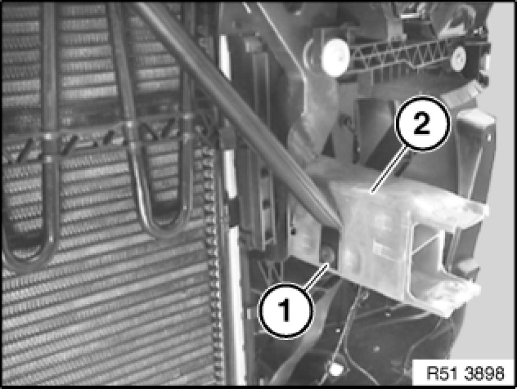

51 11 770 Removing and Installing/Replacing Left or Right Deformation Element For Front Bumper
51 11 770 - Removing and installing/replacing left or right deformation element for front bumper

Necessary preliminary tasks:
- Remove carrier 51 11 050 Removing and Installing/Replacing Carrier For Front Bumper Trim for bumper trim at front
Release screws (1).
Feed air duct (2) out of tension strut (3).
Installation:
Make sure air duct (2) is in correct position.

Release screw (1) on deformation element (2).
Note:
For height adjustment, mark position of deformation element (4).
Release bolts (1) on supplementary cooler bracket.
Release bolts (2).
Release nuts (3) and remove deformation element (4).
Installation:
Height adjustment, refer to Gap dimensions, body.
Tightening torque 51 11 6AZ [1][2]Front Bumper.